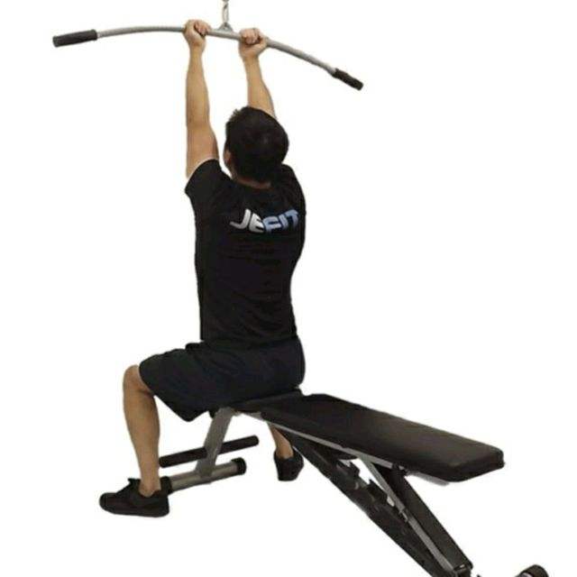

Seated Leg Extension

Sit on a bench facing an adjustable cable machine with a lat pulldown bar positioned on a high setting.
With your back straight, grab the bar with an underhand grip, your arms fully extended and your hands shoulder-width apart.
Using your shoulder pull down and transition to biceps at the bottom of the pull.
(Source here)